DIP-Python tutorials for image processing and machine learning(70-71)-Deep Learning
目录
70 - An overview of deep learning and neural networks
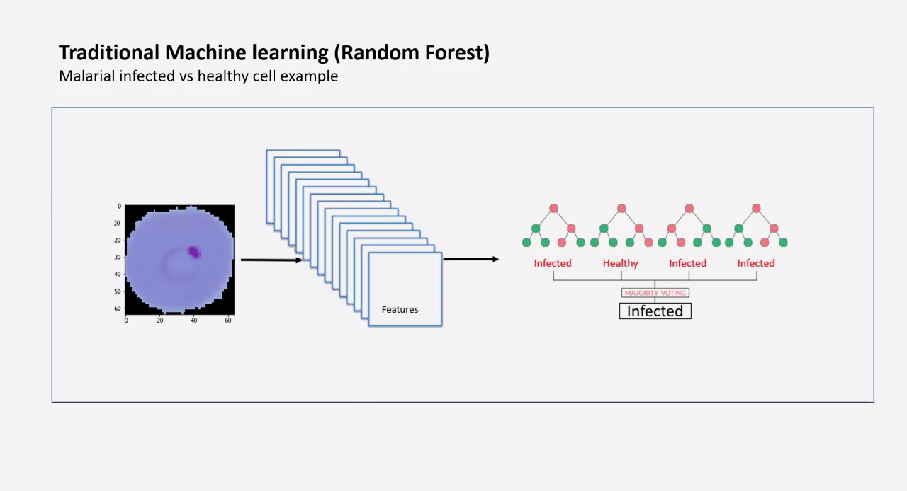
传统的机器学习：提取特征然后生成模型
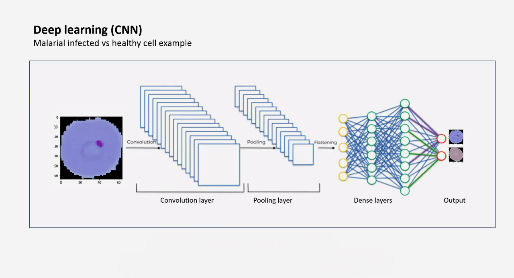
CNN深度卷积网络：输入-卷积层-池化层-全连接层
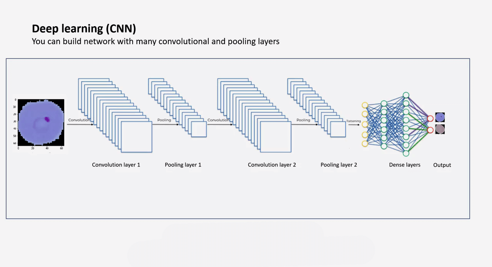
卷积层和池化层可以有很多层。
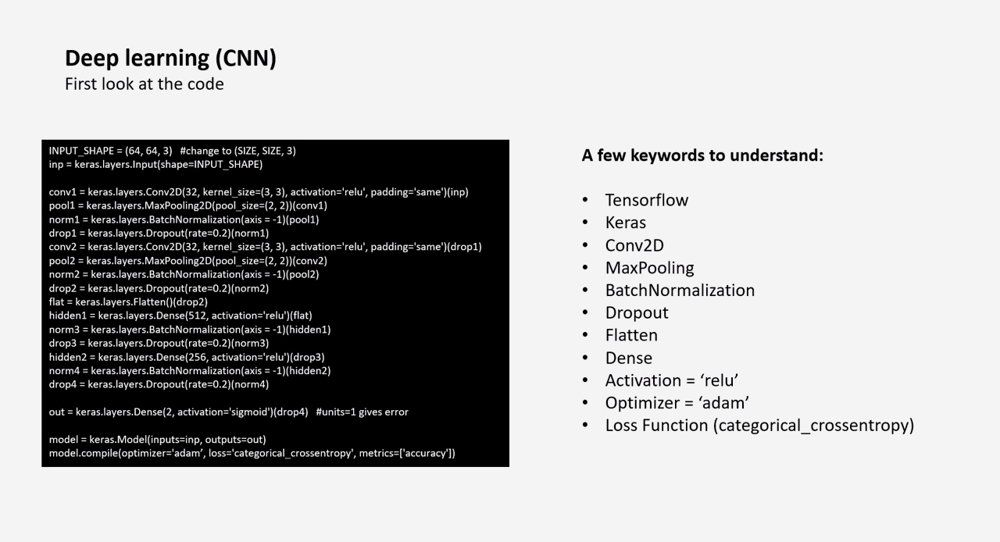
|
A few keywords to understand:
- Tensorflow
- Keras
- Conv2D
- MaxPooling
- BatchNormalization
- Dropout
- Flatten
- Flatten层用来将输入“压平”，即把多维的输入一维化，常用在从卷积层到全连接层的过渡。Flatten不影响batch的大小。
- 深度学习中Flatten层的作用_Microstrong0305的博客-CSDN博客_flatten层
- Dense
- 全连接层
- Activation =’relu’
- 激活函数：relu
- Optimizer =’adam’
- Loss Function (categorical_crossentropy)
- 损失函数
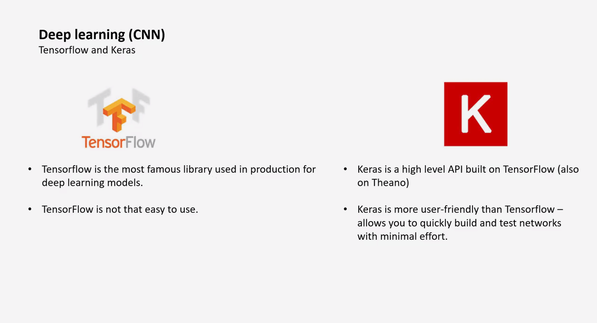
TensorFlow and Keras
- TensorFlow
- TensorFlow is the most famous library used in production for deep learning models.
- TensorFlow is not that easy to use.
- Keras
- Keras is a high level API built on TensorFlow (also on Theano)
- Keras is more user-friendly than TensorFlow -allows you to quickly build and test networks with minimal effort.
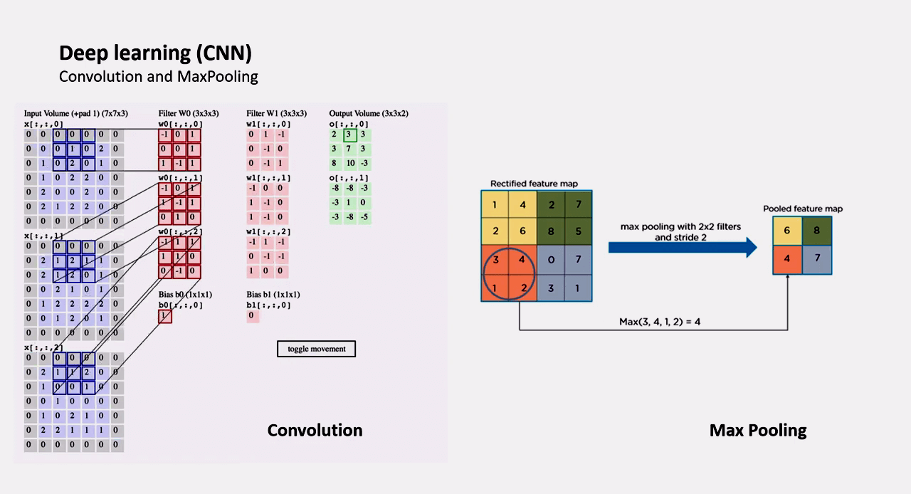
- 卷积和池化
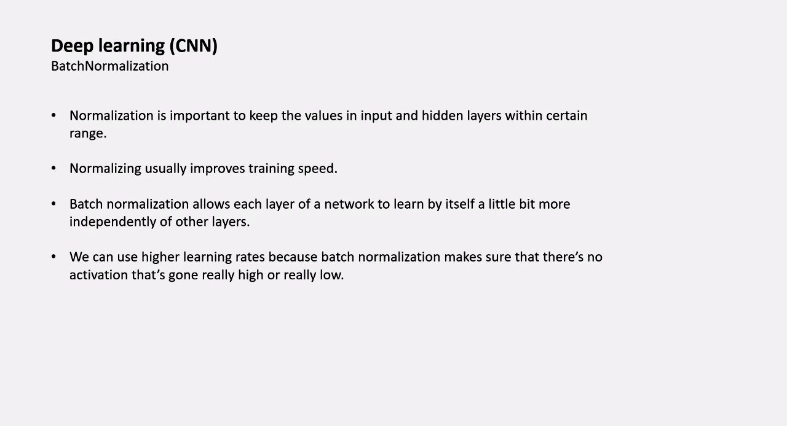
BatchNormalization
- Normalization is important to keep the values in input and hidden layers within certain range.
- Normalizing usually improves training speed.
- Batch normalization allows each layer of a network to learn by itself a little bit more independently of other layers.
- We can use higher learning rates because batch normalization makes sure that there’s noactivation that’s gone really high or really low.
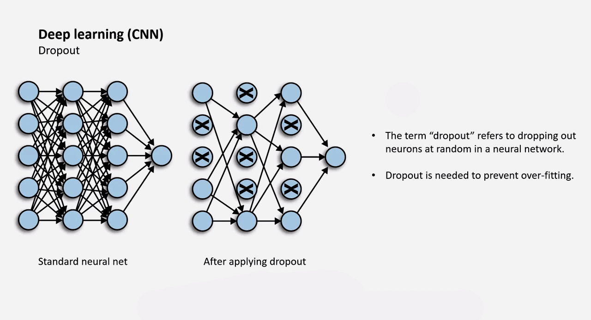
Dropout（通常是将权重设为 0）
- The term “dropout” refers to dropping out neurons at random in a neural network.
- Dropout is needed to prevent over-fitting.
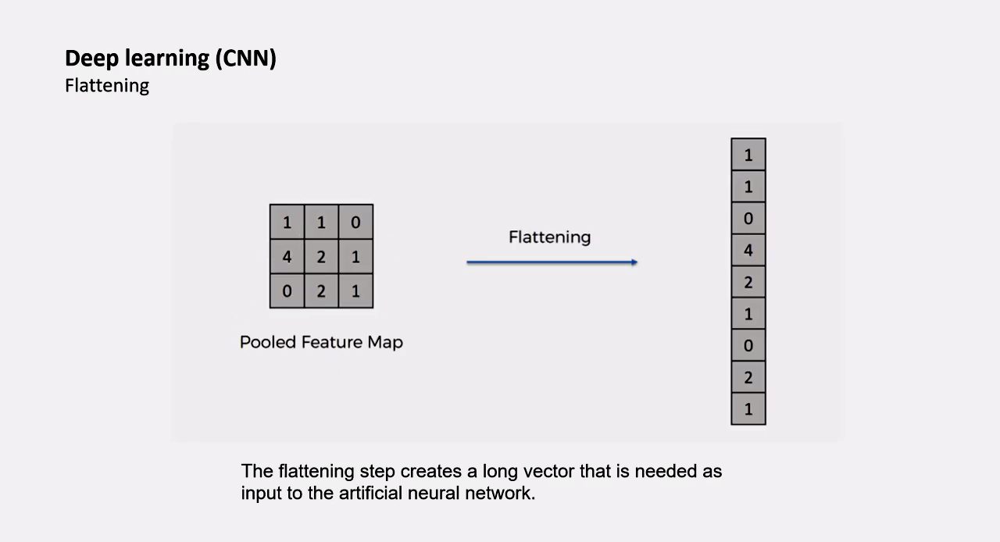
Flattening
- The flattening step creates a long vector that is needed as input to the artificial neural network.
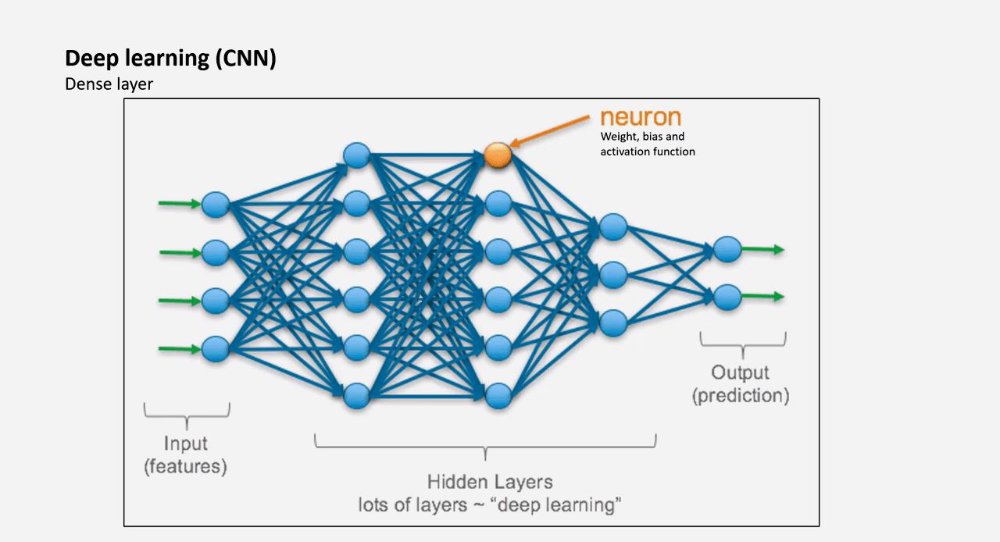
Dense layer
- Input (features)
- Hidden Layers (lots of layers ~ “deep learning”)
- neuron (Weight, bias and activation function)
- Output (prediction)
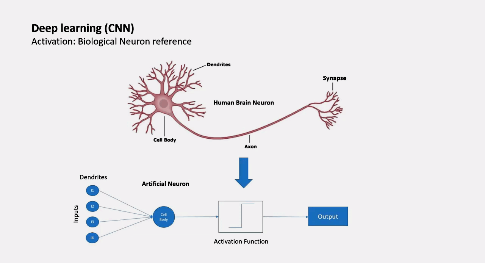
Activation: Biological Neuron reference 参考生物的神经元
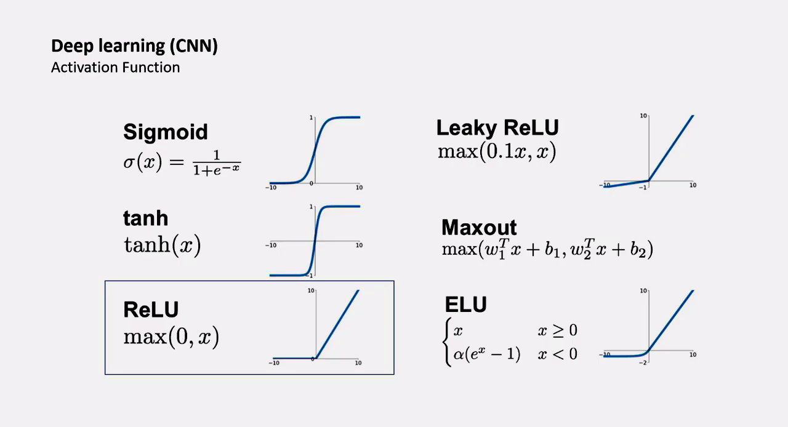
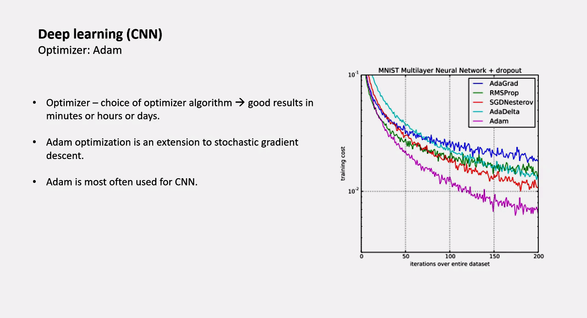
Optimizer:Adam
Optimizer → choice of optimizer algorithm → good results in minutes or hours or days.
- 优化器 → 优化器算法的选择 → 在几分钟或几小时或几天内取得好的结果。
Adam optimization is an extension to stochastic gradient descent.
- Adam 优化是对随机梯度下降的延伸。
- Adam is most often used for CNN.
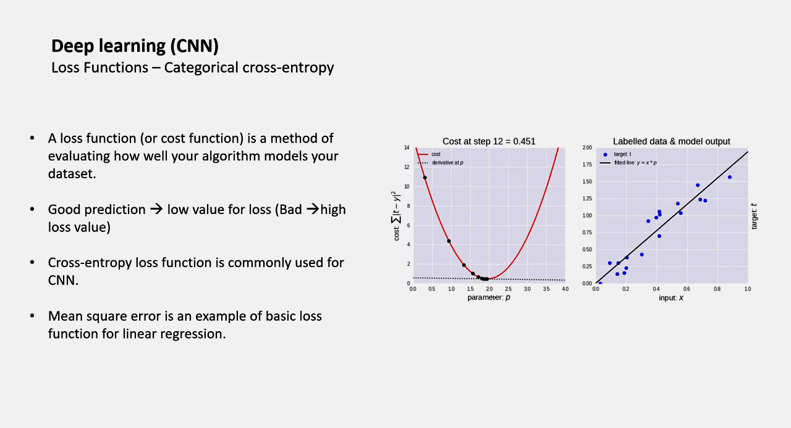
Loss Functions - Categorical cross-entropy 交叉熵损失函数
- A loss function (or cost function) is a method of evaluating how well your algorithm models your dataset.
- Good prediction → low value for loss (Bad → high loss value)
- Cross-entropy loss function is commonly used for CNN.
- Mean square error is an example of basic loss function for linear regression.
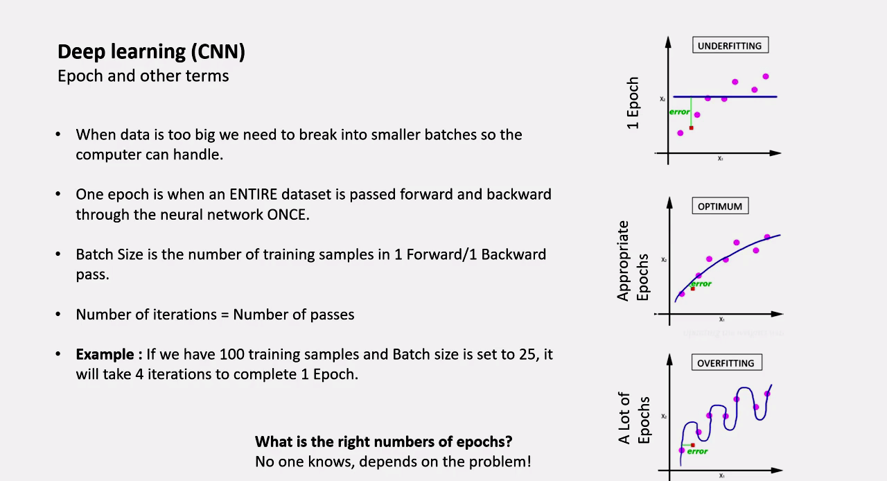
Epoch and other terms
When data is too big we need to break into smaller batches so the computer can handle.
One epoch is when an ENTIRE dataset is passed forward and backward through the neural network ONCE.
- 一个 epoch 是指一个完整的数据集通过神经网络向前和向后传递一次。
- Batch Size is the number of training samples in 1 Forward/1 Backward pass.
- Batch Size 是指 1个前向 / 1 个后向通道中的训练样本数。
Number of iterations = Number of passes
- 迭代次数 = 通过次数
Example : lf we have 100 training samples and Batch size is set to 25, it will take 4 iterations to complete 1 Epoch.
- 例子：如果我们有 100 个训练样本，批量大小设置为 25，则需要 4 次迭代来完成一个周期。
What is the right numbers of epochs?
No one knows, depends on the problem!
71 - Malarial cell classification using CNN
|
- 尝试导入输入(500 个未收感染的细胞，500 个被感染的细胞)
|
- 导入被感染的细胞，设为标签
0
|
- 导入未被感染的细胞，设为标签
1
|
设置CNN
- 2 conv and pool layers. with some normalization and drops in between.
输入层
|
- 卷积层 1 Conv2D layer
|
- 池化层 1 MaxPooling2D layer
|
|
- Dropout 1 Dropout layer
|
- 卷积层 2
|
- 池化层 2
|
- Normalization 2
|
- Dropout 2
|
- Flatten 层 Flatten layer
- Flatten the matrix to get it ready for dense.
|
- 隐藏层 1 Dense layer
|
- Normalization 3
|
- Dropout 3
|
- 隐藏层 2
|
- Normalization 4
|
- Drop 4
|
- 输出层
|
- 生成模型 The Model class
|
|
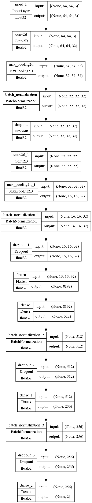
|
Model: "model"
_________________________________________________________________
Layer (type) Output Shape Param #
=================================================================
input_1 (InputLayer) [(None, 64, 64, 3)] 0
conv2d (Conv2D) (None, 64, 64, 32) 896
max_pooling2d (MaxPooling2D (None, 32, 32, 32) 0
)
batch_normalization (BatchN (None, 32, 32, 32) 128
ormalization)
dropout (Dropout) (None, 32, 32, 32) 0
conv2d_1 (Conv2D) (None, 32, 32, 32) 9248
max_pooling2d_1 (MaxPooling (None, 16, 16, 32) 0
2D)
batch_normalization_1 (Batc (None, 16, 16, 32) 128
hNormalization)
dropout_1 (Dropout) (None, 16, 16, 32) 0
flatten (Flatten) (None, 8192) 0
dense (Dense) (None, 512) 4194816
batch_normalization_2 (Batc (None, 512) 2048
hNormalization)
dropout_2 (Dropout) (None, 512) 0
dense_1 (Dense) (None, 256) 131328
batch_normalization_3 (Batc (None, 256) 1024
hNormalization)
dropout_3 (Dropout) (None, 256) 0
dense_2 (Dense) (None, 2) 514
=================================================================
Total params: 4,340,130
Trainable params: 4,338,466
Non-trainable params: 1,664
_________________________________________________________________
卷积神经网络的参数计算_qian99的博客-CSDN博客_卷积神经网络参数
| 网络层(输入) | 输入 | 神经元个数 | size | stride | 输出 | 参数量 |
|---|---|---|---|---|---|---|
| input | 64x64x3（长 x 宽 x 通道数） | 64x64x3 | 0 | |||
| conv2d | 64x64x3 | 32 | 3x3 | 1 | 64x64x32 | 32x3x3x3+32=896 |
| max_pooling2d | 64x64x32 | 2x2 | None | (64/2)x(64/2)x32 | 0 | |
| batch_normalization | 32x32x32 | 32x32x32 | 128 | |||
| dropout | 32x32x32 | 32x32x32 | 0 | |||
| conv2d_1 | 32x32x32 | 32 | 3x3 | 1 | 32x32x32 | 32x3x3x32+32=9248 |
| max_pooling2d_1 | 32x32x32 | 2x2 | 1 | (32/2)x(32/2)x32 | 0 | |
| batch_normalization_1 | 16x16x32 | 16x16x32 | 128 | |||
| dropout_1 | 16x16x32 | 16x16x32 | 0 | |||
| flatten | 16x16x32 | 16x16x32=8192 | 0 | |||
| dense | 8192 | 512 | 512 | 8192x512+512=4194816 | ||
| batch_normalization_2 | 512 | 512 | 2048 | |||
| dropout_2 | 512 | 512 | 0 | |||
| dense_1 | 512 | 256 | 256 | 512x256+256=131328 | ||
| batch_normalization_3 | 256 | 256 | 1024 | |||
| dropout_3 | 256 | 256 | 0 | |||
| dense_2 | 256 | 2 | 2 | 256x2+2=514 |
- 设置测试集和训练集，开始训练
|
|
Epoch 1/25
12/12 [==============================] - 9s 99ms/step - loss: 0.9405 - accuracy: 0.6444 - val_loss: 31.2568 - val_accuracy: 0.5625
Epoch 2/25
12/12 [==============================] - 0s 37ms/step - loss: 0.5048 - accuracy: 0.7472 - val_loss: 23.6857 - val_accuracy: 0.5625
Epoch 3/25
12/12 [==============================] - 0s 37ms/step - loss: 0.3281 - accuracy: 0.8417 - val_loss: 17.8224 - val_accuracy: 0.5625
Epoch 4/25
12/12 [==============================] - 0s 37ms/step - loss: 0.2036 - accuracy: 0.9250 - val_loss: 14.3039 - val_accuracy: 0.5625
Epoch 5/25
12/12 [==============================] - 0s 37ms/step - loss: 0.1568 - accuracy: 0.9431 - val_loss: 13.0039 - val_accuracy: 0.5625
Epoch 6/25
12/12 [==============================] - 0s 37ms/step - loss: 0.1074 - accuracy: 0.9694 - val_loss: 7.4553 - val_accuracy: 0.5625
Epoch 7/25
12/12 [==============================] - 0s 37ms/step - loss: 0.0858 - accuracy: 0.9778 - val_loss: 3.5444 - val_accuracy: 0.5500
Epoch 8/25
12/12 [==============================] - 0s 37ms/step - loss: 0.0608 - accuracy: 0.9819 - val_loss: 4.7493 - val_accuracy: 0.5500
Epoch 9/25
12/12 [==============================] - 0s 37ms/step - loss: 0.0632 - accuracy: 0.9764 - val_loss: 4.7916 - val_accuracy: 0.5625
Epoch 10/25
12/12 [==============================] - 0s 36ms/step - loss: 0.0432 - accuracy: 0.9889 - val_loss: 1.9020 - val_accuracy: 0.5875
Epoch 11/25
12/12 [==============================] - 0s 36ms/step - loss: 0.0489 - accuracy: 0.9847 - val_loss: 2.2950 - val_accuracy: 0.5750
Epoch 12/25
12/12 [==============================] - 0s 37ms/step - loss: 0.0458 - accuracy: 0.9861 - val_loss: 0.8035 - val_accuracy: 0.7625
Epoch 13/25
12/12 [==============================] - 0s 38ms/step - loss: 0.0264 - accuracy: 0.9958 - val_loss: 1.4798 - val_accuracy: 0.6500
Epoch 14/25
12/12 [==============================] - 0s 38ms/step - loss: 0.0244 - accuracy: 0.9931 - val_loss: 1.6248 - val_accuracy: 0.6625
Epoch 15/25
12/12 [==============================] - 0s 38ms/step - loss: 0.0160 - accuracy: 0.9958 - val_loss: 1.2913 - val_accuracy: 0.7125
Epoch 16/25
12/12 [==============================] - 0s 39ms/step - loss: 0.0169 - accuracy: 0.9958 - val_loss: 1.4256 - val_accuracy: 0.6875
Epoch 17/25
12/12 [==============================] - 0s 40ms/step - loss: 0.0114 - accuracy: 0.9986 - val_loss: 1.2699 - val_accuracy: 0.7000
Epoch 18/25
12/12 [==============================] - 0s 39ms/step - loss: 0.0158 - accuracy: 0.9972 - val_loss: 0.7563 - val_accuracy: 0.7875
Epoch 19/25
12/12 [==============================] - 0s 39ms/step - loss: 0.0133 - accuracy: 0.9972 - val_loss: 0.6219 - val_accuracy: 0.8500
Epoch 20/25
12/12 [==============================] - 0s 38ms/step - loss: 0.0194 - accuracy: 0.9958 - val_loss: 0.7935 - val_accuracy: 0.8500
Epoch 21/25
12/12 [==============================] - 0s 38ms/step - loss: 0.0174 - accuracy: 0.9972 - val_loss: 2.8081 - val_accuracy: 0.5625
Epoch 22/25
12/12 [==============================] - 0s 38ms/step - loss: 0.0188 - accuracy: 0.9931 - val_loss: 0.6510 - val_accuracy: 0.8000
Epoch 23/25
12/12 [==============================] - 0s 38ms/step - loss: 0.0340 - accuracy: 0.9903 - val_loss: 1.6654 - val_accuracy: 0.6250
Epoch 24/25
12/12 [==============================] - 0s 38ms/step - loss: 0.0248 - accuracy: 0.9931 - val_loss: 0.8992 - val_accuracy: 0.7625
Epoch 25/25
12/12 [==============================] - 0s 38ms/step - loss: 0.0201 - accuracy: 0.9917 - val_loss: 2.0561 - val_accuracy: 0.7250
- 查看结果
|
7/7 [==============================] - 0s 17ms/step - loss: 1.7793 - accuracy: 0.6950
Test_Accuracy: 69.50%
|
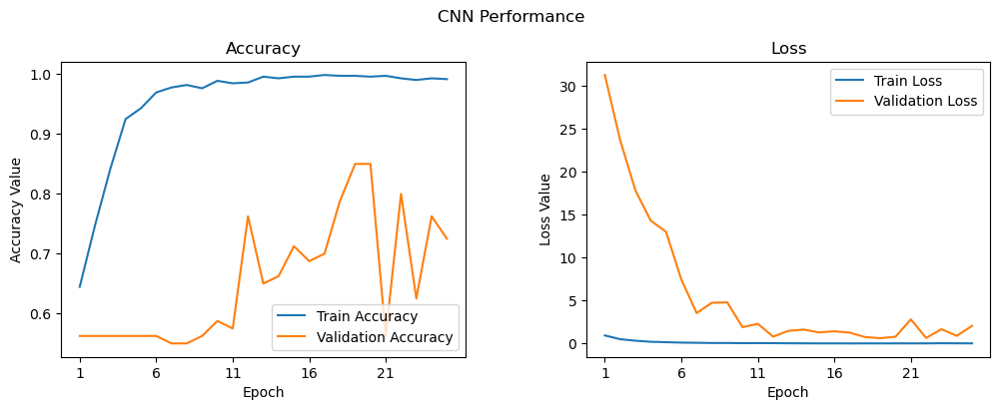
可以推断出 epoch 次数过多，出现了过拟合现象。
- 保存模型
|
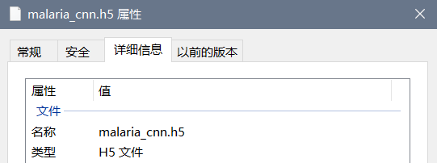